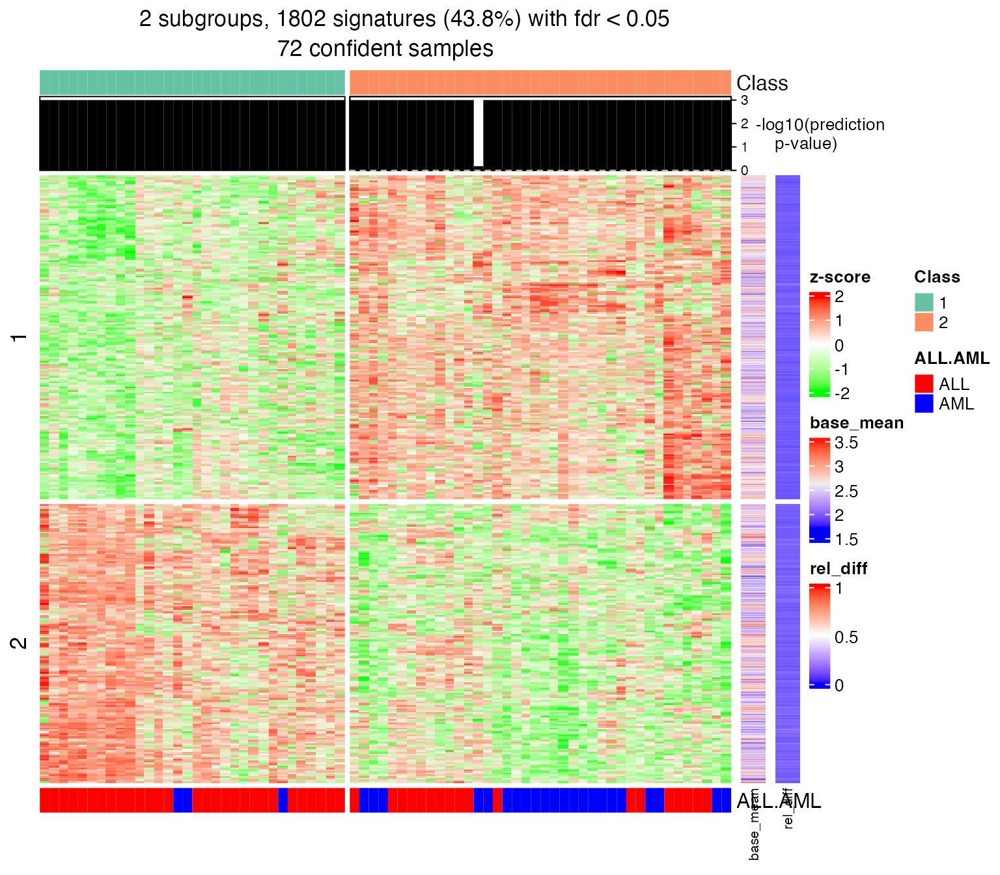

Work with Big Datasets
Zuguang Gu ( z.gu@dkfz.de )
2020-10-01
Source:vignettes/work_with_big_datasets.Rmd
work_with_big_datasets.Rmdcola can be idealy applied to datasets with intermediate number of samples (around 500), however, the running time and the memory usage might not be acceptable if the number of samples gets very huge, e.g., more than thousands. Nevertheless, we can propose the following two strategies to partially solve this problem.
- A randomly sampled subset of samples which take relatively short running time (e.g., 100-200 samples) can be firstly applied with cola, from which a specific combination of top-value method and partitioning method that gives the best results can be pre-selected. Later user can only apply these two specific methods to the complete dataset. This would be much faster than blindly running cola with many methods in sequence.
- The random subset of samples can be treated as a training set to generate a classification of cells. Then, the class labels of the remaining samples can be predicted, e.g. by testing the distance to the centroid of each cell group, without rerunning consensus partitioning on them. cola implements a
predict_classes()function for this purpose (see the vignette “Predict classes for new samples” for details).
Note, since these two strategies are performed by sampling a small subset of cells from the cohort, the cell clusters with small size might not be detectable.
In the following examples, we use pseudo code to demonstrate the ideas. Assuming the full matrix is in an object mat. We randomly sample 200 samples from it:
Strategy 1. First we can apply cola on mat1:
rl = run_all_consensus_partition_methods(mat1, ...) cola_report(rl, ...)
Then find a best combination of top-value method and partitioining method. Assuming they are saved in objects tm and pm. Next run consensus_partition() on mat only with tm and pm:
res = consensus_partition(mat, top_value_method = tm, partition_method = pm, ...)
Strategy 2. Similar as Strategy 1, we get the ConsensusPartition object from methods tm and pm, which was applied on mat1:
res = rl[tm, pm]
Note the consensus partition object res is only based on a subset of original samples. With res, the classes of remaining samples can be predicted:
mat2 = mat[, setdiff(seq_len(ncol(mat)), ind)] mat2 = t(scale(t(mat2))) cl = predict_classes(res, mat2)
Please note, by default mat1 is scaled in cola analysis, correspondingly, mat2 should also be row-scaled.
You can also directly send mat to predict_classes() function:
cl = predict_classes(res, t(scale(t(mat))))
The DownSamplingConsensusPartition class
cola implements a new DownSamplingConsensusPartition class for Strategy 2 mentioned above. It runs consensus partitioning only on a subset of samples and the classes of other samples are predicted by predict_classes() internally. The DownSamplingConsensusPartition class inherits the ConsensusPartition class, so the functions that can be applied to the ConsensusPartition objects can also be applied to the DownSamplingConsensusPartition objects, just with some tiny difference.
In the following example, we demonstrate the usage of DownSamplingConsensusPartition class with the Golub dataset. Here the Golub dataset was used to generate another data object golub_cola and we can extract the matrix and the annotations by get_matrix() and get_anno() functions.
To perform down sampling consensus partitioning, use the helper function consensus_partition_by_down_sampling(). This function basically run consensus_partition() on a subset of samples and later predict the classes for all samples by predict_classes() function. Here we set subset argument to 50, which means to randomly sample 50 samples from the whole dataset.
data(golub_cola) m = get_matrix(golub_cola) set.seed(123) golub_cola_ds = consensus_partition_by_down_sampling(m, subset = 50, anno = get_anno(golub_cola), anno_col = get_anno_col(golub_cola), top_value_method = "SD", partition_method = "kmeans")
The object golub_cola_ds is already shipped in the package. Simply load the data object.
data(golub_cola_ds) golub_cola_ds
## A 'DownSamplingConsensusPartition' object with k = 2, 3, 4, 5, 6.
## On a matrix with 4116 rows and 50 columns, randomly sampled from 72 columns.
## Top rows (412, 824, 1235) are extracted by 'ATC' method.
## Subgroups are detected by 'skmeans' method.
## Performed in total 750 partitions by row resampling.
## Best k for subgroups seems to be 2.
##
## Following methods can be applied to this 'DownSamplingConsensusPartition' object:
## [1] "cola_report" "collect_classes" "collect_plots"
## [4] "collect_stats" "colnames" "compare_signatures"
## [7] "consensus_heatmap" "dimension_reduction" "functional_enrichment"
## [10] "get_anno_col" "get_anno" "get_classes"
## [13] "get_consensus" "get_matrix" "get_membership"
## [16] "get_param" "get_signatures" "get_stats"
## [19] "is_best_k" "is_stable_k" "membership_heatmap"
## [22] "ncol" "nrow" "plot_ecdf"
## [25] "predict_classes" "rownames" "select_partition_number"
## [28] "show" "suggest_best_k" "test_to_known_factors"The summary of the golub_cola_ds is very similar as the ConsensusPartition object, except that it mentions the object is generated from 50 samples randomly sampled from 72 samples.
All the functions that are applied to the ConsensusParition class can be applied to the DownSamplingConsensusPartition class, except some tiny differences.
get_classes() returns the predicted classes for all samples:
class = get_classes(golub_cola_ds, k = 2) nrow(class)
## [1] 72class## class p
## sample_39 2 0.000
## sample_40 2 0.000
## sample_42 1 0.000
## sample_47 1 0.000
## sample_48 1 0.000
## sample_49 2 0.000
## sample_41 1 0.000
## sample_43 1 0.000
## sample_44 1 0.000
## sample_45 1 0.000
## sample_46 1 0.000
## sample_70 1 0.000
## sample_71 1 0.000
## sample_72 1 0.000
## sample_68 1 0.000
## sample_69 1 0.000
## sample_67 1 0.000
## sample_55 2 0.000
## sample_56 2 0.000
## sample_59 1 0.300
## sample_52 2 0.000
## sample_53 2 0.000
## sample_51 2 0.000
## sample_50 2 0.000
## sample_54 1 0.000
## sample_57 2 0.000
## sample_58 2 0.000
## sample_60 2 0.000
## sample_61 2 0.000
## sample_65 2 0.000
## sample_66 1 0.000
## sample_63 2 0.000
## sample_64 2 0.000
## sample_62 2 0.000
## sample_1 2 0.000
## sample_2 1 0.000
## sample_3 2 0.000
## sample_4 2 0.000
## sample_5 1 0.000
## sample_6 2 0.000
## sample_7 2 0.000
## sample_8 2 0.000
## sample_9 1 0.000
## sample_10 2 0.924
## sample_11 1 0.000
## sample_12 2 0.000
## sample_13 1 0.000
## sample_14 1 0.000
## sample_15 1 0.000
## sample_16 1 0.000
## sample_17 1 0.000
## sample_18 2 0.000
## sample_19 1 0.000
## sample_20 1 0.000
## sample_21 1 0.000
## sample_22 2 0.000
## sample_23 2 0.000
## sample_24 1 0.000
## sample_25 2 0.000
## sample_26 1 0.000
## sample_27 2 0.000
## sample_34 2 0.000
## sample_35 2 0.000
## sample_36 2 0.000
## sample_37 2 0.000
## sample_38 2 0.000
## sample_28 2 0.000
## sample_29 1 0.000
## sample_30 2 0.000
## sample_31 2 0.000
## sample_32 2 0.000
## sample_33 2 0.000There is an additional column named p which is the p-value for predicting the class labels. For more details of how the p-value is calculated, please refer to the vignette “Predict classes for new samples”.
If the argument k is not specified or k is specified as a vector, the class labels for all k are returned. Now you can set the p_cutoff argument so that the class label with p-value larger than this is set to NA.
get_classes(golub_cola_ds, p_cutoff = 0.05)
## k=2 k=3 k=4 k=5 k=6
## sample_39 2 3 3 3 3
## sample_40 2 3 3 3 3
## sample_42 1 1 1 1 1
## sample_47 1 1 1 1 1
## sample_48 1 1 1 1 1
## sample_49 2 3 3 3 3
## sample_41 1 1 1 1 1
## sample_43 1 1 1 1 1
## sample_44 1 1 1 1 1
## sample_45 1 1 1 1 1
## sample_46 1 1 1 1 1
## sample_70 1 1 1 1 1
## sample_71 1 1 4 4 4
## sample_72 1 1 4 4 4
## sample_68 1 1 1 1 1
## sample_69 1 1 1 1 1
## sample_67 1 1 NA 4 NA
## sample_55 2 3 3 3 3
## sample_56 2 3 3 3 3
## sample_59 NA NA NA NA NA
## sample_52 2 2 2 5 5
## sample_53 2 2 2 2 2
## sample_51 2 2 2 2 2
## sample_50 2 2 2 2 2
## sample_54 1 1 NA 1 1
## sample_57 2 2 2 NA NA
## sample_58 2 2 2 2 2
## sample_60 2 2 2 NA NA
## sample_61 2 2 2 2 2
## sample_65 2 2 2 2 2
## sample_66 1 1 1 1 1
## sample_63 2 2 2 5 5
## sample_64 2 NA 2 NA 3
## sample_62 2 2 2 5 5
## sample_1 2 3 3 3 3
## sample_2 1 1 1 1 1
## sample_3 2 3 3 3 3
## sample_4 2 3 3 3 3
## sample_5 1 1 1 1 1
## sample_6 2 3 3 3 3
## sample_7 2 3 3 3 3
## sample_8 2 3 3 3 3
## sample_9 1 1 1 1 1
## sample_10 NA NA 1 NA NA
## sample_11 1 1 1 1 1
## sample_12 2 2 2 NA 2
## sample_13 1 1 1 1 1
## sample_14 1 1 1 1 1
## sample_15 1 1 1 1 1
## sample_16 1 1 1 1 1
## sample_17 1 1 1 1 1
## sample_18 2 3 3 NA NA
## sample_19 1 1 1 1 1
## sample_20 1 1 1 1 1
## sample_21 1 1 1 1 1
## sample_22 2 3 NA NA NA
## sample_23 2 3 3 3 3
## sample_24 1 1 1 1 1
## sample_25 2 NA NA NA NA
## sample_26 1 3 NA NA NA
## sample_27 2 3 3 3 3
## sample_34 2 2 2 2 2
## sample_35 2 2 2 NA NA
## sample_36 2 2 2 2 2
## sample_37 2 2 2 2 2
## sample_38 2 2 2 2 2
## sample_28 2 2 2 2 2
## sample_29 1 1 1 1 1
## sample_30 2 2 2 2 2
## sample_31 2 2 2 2 2
## sample_32 2 2 2 2 2
## sample_33 2 2 2 2 2There are several functions uses p_cutoff argument which controls the number of “usable samples” or the samples with reliable classifications. These functions are get_classes(), test_to_known_factors(), dimension_reduction() and get_signatures().
For dimension_reduction() function, the samples with p-value higher than p_cutoff are marked by crosses. The samples that were not selected in the random sampling were mapped with smaller dots.
dimension_reduction(golub_cola_ds, k = 2)
## use UMAP
For get_signatures() function, the signatures are only found in the samples with p-values less than p_cutoff.
get_signatures(golub_cola_ds, k = 2)
## * 70/72 samples (in 2 classes) remain after filtering by p-value (<= 0.05).
## * cache hash: d7ed9b16253695bd9adb86dbaa84b708 (seed 888).
## * calculating row difference between subgroups by Ftest.
## * split rows into 2 groups by k-means clustering.
## * 1847 signatures (44.9%) under fdr < 0.05, group_diff > 0.
## * making heatmaps for signatures.
Session info
## R version 4.0.2 (2020-06-22)
## Platform: x86_64-apple-darwin17.0 (64-bit)
## Running under: macOS Catalina 10.15.5
##
## Matrix products: default
## BLAS: /Library/Frameworks/R.framework/Versions/4.0/Resources/lib/libRblas.dylib
## LAPACK: /Library/Frameworks/R.framework/Versions/4.0/Resources/lib/libRlapack.dylib
##
## locale:
## [1] en_GB.UTF-8/en_GB.UTF-8/en_GB.UTF-8/C/en_GB.UTF-8/en_GB.UTF-8
##
## attached base packages:
## [1] stats graphics grDevices utils datasets methods base
##
## other attached packages:
## [1] cola_1.5.6 knitr_1.29 markdown_1.1
##
## loaded via a namespace (and not attached):
## [1] mclust_5.4.6 Rcpp_1.0.5 lattice_0.20-41 circlize_0.4.11
## [5] png_0.1-7 assertthat_0.2.1 rprojroot_1.3-2 digest_0.6.25
## [9] RSpectra_0.16-0 slam_0.1-47 R6_2.4.1 backports_1.1.9
## [13] stats4_4.0.2 RSQLite_2.2.0 evaluate_0.14 httr_1.4.2
## [17] GlobalOptions_0.1.2 rlang_0.4.7 annotate_1.66.0 blob_1.2.1
## [21] magick_2.4.0 S4Vectors_0.26.1 GetoptLong_1.0.3 Matrix_1.2-18
## [25] reticulate_1.16 rmarkdown_2.3 pkgdown_1.5.1 splines_4.0.2
## [29] desc_1.2.0 stringr_1.4.0 bit_4.0.4 RCurl_1.98-1.2
## [33] umap_0.2.6.0 compiler_4.0.2 eulerr_6.1.0 xfun_0.16
## [37] askpass_1.1 microbenchmark_1.4-7 BiocGenerics_0.34.0 shape_1.4.4
## [41] htmltools_0.5.0 openssl_1.4.2 IRanges_2.22.2 matrixStats_0.56.0
## [45] XML_3.99-0.5 crayon_1.3.4 MASS_7.3-52 bitops_1.0-6
## [49] grid_4.0.2 jsonlite_1.7.0 xtable_1.8-4 DBI_1.1.0
## [53] magrittr_1.5 skmeans_0.2-12 stringi_1.4.6 impute_1.62.0
## [57] genefilter_1.70.0 fs_1.5.0 xml2_1.3.2 vctrs_0.3.4
## [61] brew_1.0-6 rjson_0.2.20 RColorBrewer_1.1-2 tools_4.0.2
## [65] bit64_4.0.5 Biobase_2.48.0 survival_3.2-3 parallel_4.0.2
## [69] yaml_2.2.1 clue_0.3-57 AnnotationDbi_1.50.3 colorspace_1.4-1
## [73] cluster_2.1.0 ComplexHeatmap_2.5.5 memoise_1.1.0